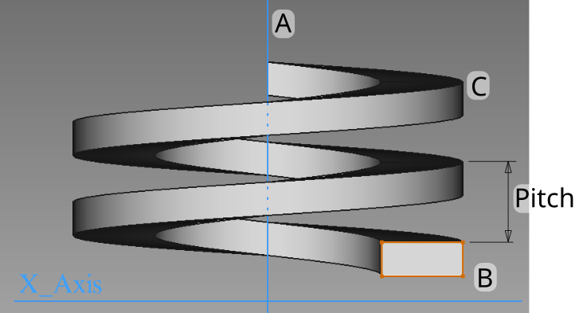
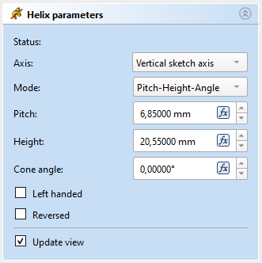
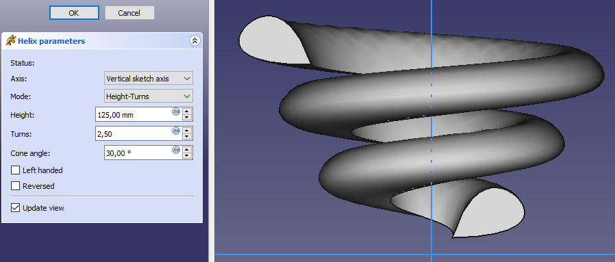
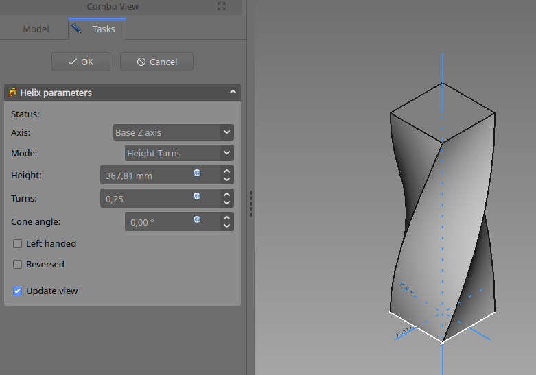

PartDesign AdditiveHelix/cs
|
PartDesign Aditivní šroubovice |
| Umístění Menu |
|---|
| Tvorba dílu → Aditivní prvky → Addtivní šroubovice |
| Pracovní stoly |
| PartDesign |
| Výchozí zástupce |
| Nikdo |
| Představen ve verzi |
| 0.19 |
| Viz také |
| PartDesign Subtraktivní pružina |
Popis
Nástroj Aditivní šroubovice vytvoří těleso posunutím vybraného náčrtku nebo 2D objektu podél šroubovicové dráhy.
{kind=link}

Profil (B) se otáčí kolem osy (A), čímž vzniká plná šroubovice (C).
Použití
- Select the sketch to be swept into a helix. A face on the existing solid can alternatively be used.
- There are several ways to invoke the tool:
- Press the
 Additive Helix button.
Additive Helix button. - Select the Part Design → Additive Features → Additive Helix option from the menu.
- Press the
- Set the Helix parameters (see next section).
- Inspect the Helix in the view window, to ensure that the parameters do not result in a self intersecting helix.
- Press OK.
Options
When creating an Additive Helix, the Helix Parameters dialogue offers several parameters specifying how the sketch should be swept.
{kind=link}

Axis
This option specifies the axis about which the sketch is to be swept.
- Normal sketch axis: selects the normal of the sketch that runs through the sketch origin as axis.
- Vertical sketch axis: selects the vertical sketch axis. This is the default for new helices.
- Horizontal sketch axis: selects the horizontal sketch axis.
- Construction line: selects a construction line contained in the sketch used by the Helix. The drop down list will contain an entry for each construction line. The first construction line created in the sketch will be labelled Construction line 1.
- Base (X/Y/Z)-axis: selects the X-, Y- or Z-axis of the Body's Origin;
- Select reference…: allows selection in the 3D View of an edge on the Body, or a datum line.
Mode
This controls what parameters will be used to define the helix. The choices are:
- Pitch-Height-Angle: definition via the height per turn and the overall height
- Pitch-Turns-Angle: definition via the height per turn and the number of turns
- Height-Turns-Angle: definition via the overall height and the number of turns
- Height-Turns-Growth: definition via the overall height, the number of turns and the growth of the helical radius. So a Height of zero leads to a path in form of a spiral. A Height and Growth of zero to leads to a path in form of a circle.
Pitch
The distance between turns in the helix.
Height
The height of the helix (center-center).
Turns
The number of turns in the helix. Define as Height/Pitch
Cone Angle
Angle of the cone that forms a hull around the helix. Allowable range: [-89°, +89°].
Left handed
If checked, the turning direction of helix is reversed from default clockwise to counterclockwise.
Reversed
If checked, the axis direction of helix is reversed from default.
Recompute on change
If checked, the helix will be shown in the view, and updated automatically on every change of the parameters.
Properties
- ÚdajePitch: The axial distance between two turns.
- ÚdajeHeight: The total length of the helix (not accounting for the extent of the profile)
- ÚdajeTurns: The number of turns (does not need to be a whole number)
- ÚdajeLeft Handed: See Left Handed.
- ÚdajeReversed: See Reversed.
- ÚdajeAngle: The rate at which the radius of the helix increase along the axis. Allowable range: [-89°, +89°].
- ÚdajeReference axis: The helix axis
- ÚdajeMode: The helix input mode (pitch-height, pitch-turns, turns-height)
- ÚdajeOutside: Not used (Used in SubtractiveHelix)
- ÚdajeHas Been Edited: If false, the tool will propose an initial value for pitch based on the profile bounding box, so that self intersection is avoided.
- ÚdajeRefine: true or false. If set to true, cleans the solid from residual edges left by features. See Part RefineShape for more details.
- ÚdajeProfile: Either a sketch containing a closed contour, or a face.
- ÚdajeMidplane: Not used.
- ÚdajeUp to face: Not used.
- ÚdajeAllow multiple face: Not used.
Notes
Helixes are very difficult for the underlying engine to calculate correctly because the curves involved push floating point precision to its limit. Some tips for achieving robust results:
- To avoid the risk of self-intersection, the thread profile must be slightly narrower than the pitch.
- Exact matches where the surface of the helix is perfectly aligned with the surface of another object are fragile. A thread around a bolt cylinder is an example of this. Make sure the profile extends well into the bolt. 1µm has been observed to be sufficient.
- Objects created by rotation have a seam-line. The profile must be slightly offset from the seam line. You may chose one of the default planes. Or rotate the profile sketch before adding the helix. Or use the default plane, but the other half (opposite of the seam-line).
- Performing further operations on a helix like attempting boolean operations with another object can be very sensitive to small changes. When they fail, they often break the model in surprising ways. Try to make operations on a helix either clearly overlap (interfere) or clearly not overlap. It may even work initially, and then break later when objects are moved slightly.
Examples
{kind=link}

{kind=link}

- Helper tools: New Body, New Sketch, Attach Sketch, Edit Sketch, Validate Sketch, Check Geometry, Sub-Shape Binder, Clone
- Modeling tools:
- Additive tools: Pad, Revolution, Additive Loft, Additive Pipe, Additive Helix, Additive Box, Additive Cylinder, Additive Sphere, Additive Cone, Additive Ellipsoid, Additive Torus, Additive Prism, Additive Wedge
- Subtractive tools: Pocket, Hole, Groove, Subtractive Loft, Subtractive Pipe, Subtractive Helix, Subtractive Box, Subtractive Cylinder, Subtractive Sphere, Subtractive Cone, Subtractive Ellipsoid, Subtractive Torus, Subtractive Prism, Subtractive Wedge
- Boolean: Boolean Operation
- Dress-up tools: Fillet, Chamfer, Draft, Thickness
- Transformation tools: Mirror, Linear Pattern, Polar Pattern, Multi-Transform, Scale
- Additional tools: Shape Binder, Involute Gear, Sprocket, Shaft Design Wizard
- Context menu: Suppressed, Set Tip, Move Object To…, Move Feature After…
- Preferences: Preferences, Fine tuning
- Getting started
- Installation: Download, Windows, Linux, Mac, Additional components, Docker, AppImage, Ubuntu Snap
- Basics: About FreeCAD, Interface, Mouse navigation, Selection methods, Object name, Preferences, Workbenches, Document structure, Properties, Help FreeCAD, Donate
- Help: Tutorials, Video tutorials
- Workbenches: Std Base, Assembly, BIM, CAM, Draft, FEM, Inspection, Material, Mesh, OpenSCAD, Part, PartDesign, Points, Reverse Engineering, Robot, Sketcher, Spreadsheet, Surface, TechDraw, Test Framework
- Hubs: User hub, Power users hub, Developer hub